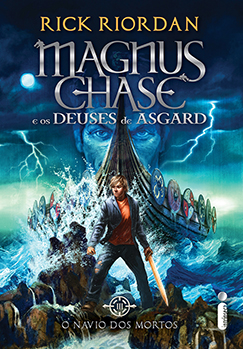

Navio dos Mortos

SINOPSE:
Nos dois primeiros livros da série, Magnus Chase, o herói boa-pinta que é a cara do astro de rock Kurt Cobain, ex-morador de rua e atual guerreiro imortal de Odin, precisou sair em algumas jornadas árduas e desafiar monstros, gigantes e deuses nórdicos para impedir que os nove mundos fossem destruídos no Ragnarök, o fim do mundo viking. Em O navio dos mortos, Loki está livre da sua prisão e preparando Naglfar, o navio dos mortos, para invadir Asgard e lutar ao lado de um exército de gigantes e zumbis na batalha final contra os deuses.
BAIXAR LIVRO